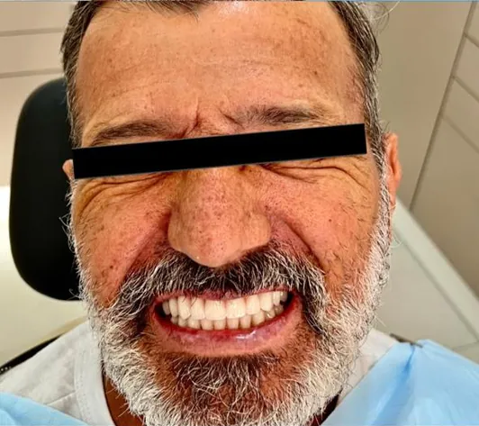
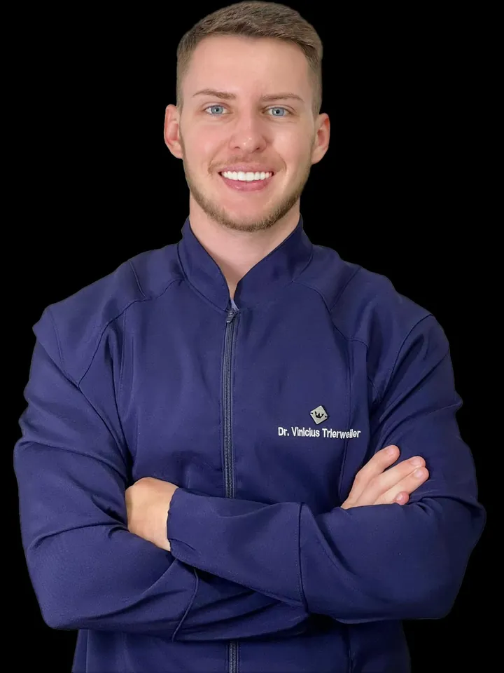
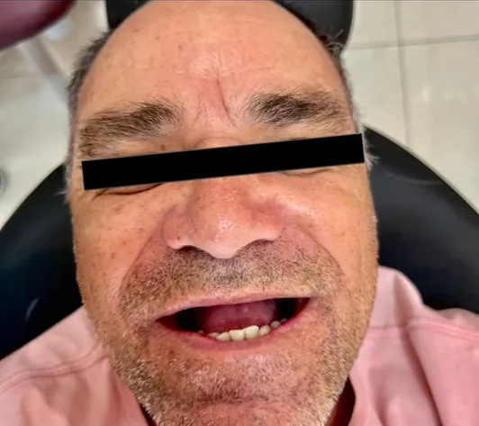
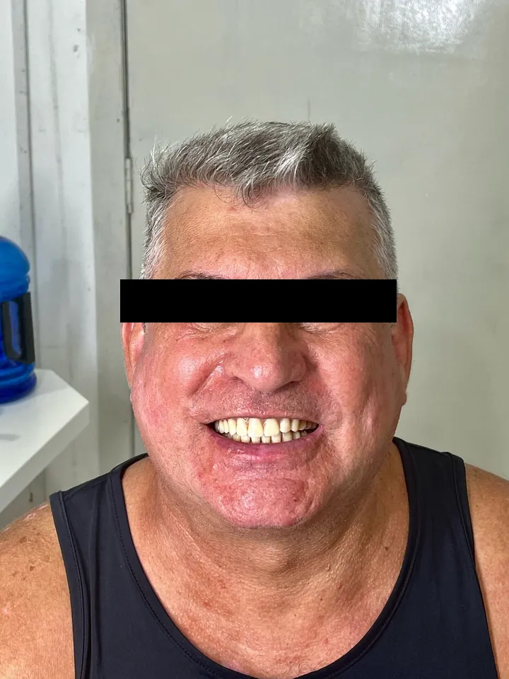
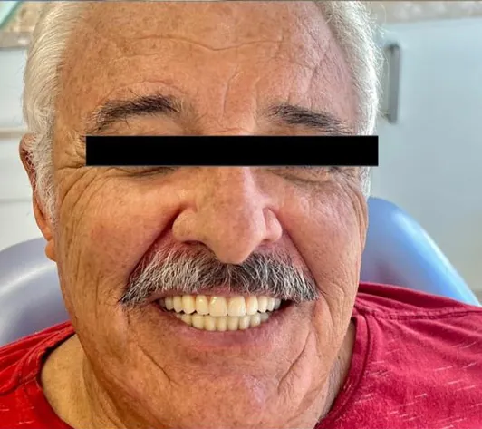
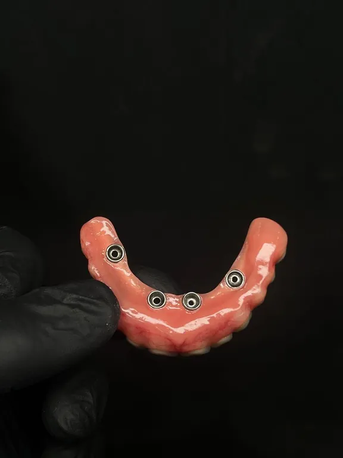
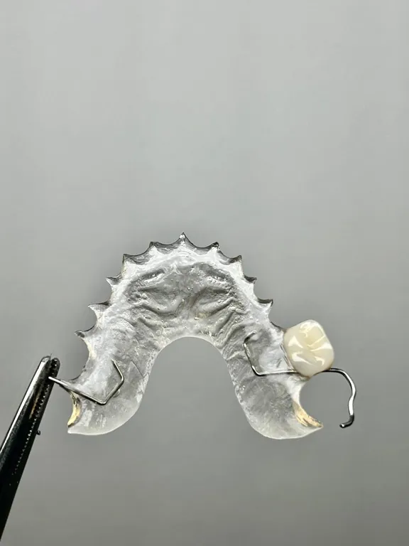
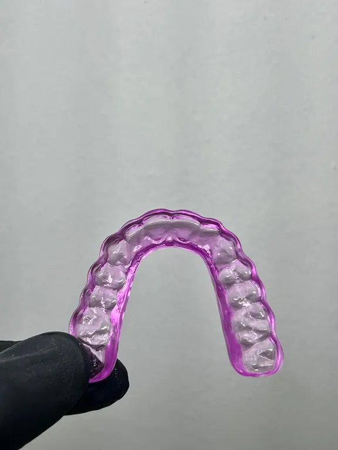
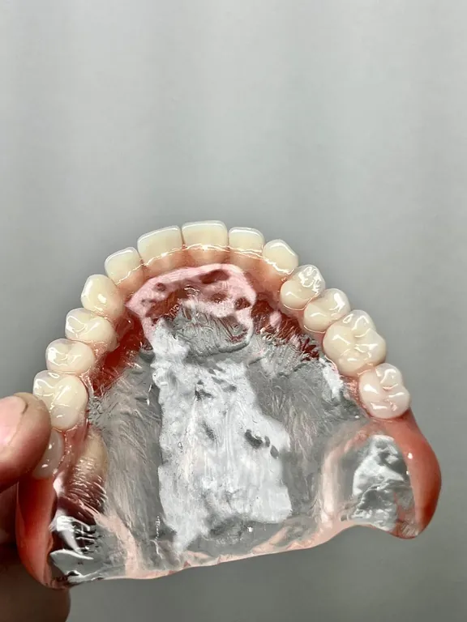

DepoisReabilitação da arcada superior com prótese.
Prótese dentária e protocolo em Itajaí
O Dr. Vinícius é cirurgião-dentista e técnico em prótese há 8 anos. Ele avalia o seu caso, confecciona a prótese no laboratório próprio e acompanha cada ajuste até ela ficar confortável e natural.
Sem custo e sem compromisso. Atendimento no bairro Cordeiros, em Itajaí.

Resultados
Casos reais atendidos pelo Dr. Vinícius, com próteses planejadas e confeccionadas por ele.

DepoisReabilitação da arcada superior com prótese.

Antes Depois
DepoisReabilitação com prótese total.

AntesTroca da prótese antiga por uma nova, com dentes mais claros e proporcionais ao rosto.
 Depois
DepoisPacientes após a instalação da prótese.
Imagens publicadas com autorização dos pacientes. Cada caso tem um planejamento próprio e os resultados variam de pessoa para pessoa.
Por que o Dr. Vinícius
Antes de se formar dentista, ele passou 8 anos na bancada fabricando próteses. Hoje une as duas coisas no seu tratamento.
O mesmo profissional que examina a sua boca confecciona a prótese. Nada se perde entre o consultório e o laboratório.
Cor, formato e tamanho dos dentes escolhidos para o seu rosto, e gengiva caracterizada para um resultado com aparência natural.
Provas e ajustes feitos por quem conhece cada detalhe da peça, até você se sentir seguro para falar, sorrir e mastigar.


Tratamentos
Na avaliação, o Dr. Vinícius explica qual opção faz sentido para o seu caso.

Prótese fixa, parafusada sobre implantes, para quem perdeu os dentes de uma arcada inteira. Não sai da boca.

A dentadura feita sob medida, com dentes e gengiva de aparência natural e boa adaptação.

Repõe os dentes que faltam, usando os dentes naturais que você ainda tem como apoio.

Placa sob medida que protege os dentes e alivia a tensão de quem range ou aperta os dentes.
Do laboratório
Cada peça passa pela bancada dele antes de chegar ao paciente.





Quem vai cuidar de você
Começou na prótese dentária em 2017, aos 17 anos. Foram anos de bancada aprendendo gesso, metal e resina antes de entrar na faculdade de Odontologia. Formado cirurgião-dentista, hoje atende pacientes e mantém o próprio laboratório, o Maestria Laboratório, com uma equipe de 3 pessoas.
Essa trajetória faz diferença no seu tratamento: ele entende a prótese por dentro e sabe o que precisa ser ajustado para ela ficar confortável e com aparência natural.
Avaliação gratuita
Conte rapidamente o que você precisa e escolha o melhor dia e horário.
No consultório, o Dr. Vinícius examina o seu caso com calma e responde todas as suas dúvidas.
Você recebe a explicação do tratamento indicado e decide, sem pressão, se quer seguir.
Dúvidas frequentes
Sim. A avaliação não tem custo e não obriga você a fazer o tratamento. É o momento de entender o seu caso e tirar dúvidas.
O próprio Dr. Vinícius, no laboratório dele. Quem atende você no consultório é quem confecciona e ajusta a peça.
Na maioria dos casos, sim. Na avaliação ele verifica a sua situação e explica as opções possíveis para você.
A dentadura (prótese total) é removível e apoiada na gengiva. O protocolo é fixo, parafusado sobre implantes, e não sai da boca. A indicação depende de cada caso.
Rua Luiz da Silva, 199, bairro Cordeiros, Itajaí, Santa Catarina.
Agende agora
A avaliação é gratuita e sem compromisso. Fale com a gente pelo WhatsApp e escolha o seu horário.
Onde atendemos
Rua Luiz da Silva, 199WhatsApp: (47) 99971-4094